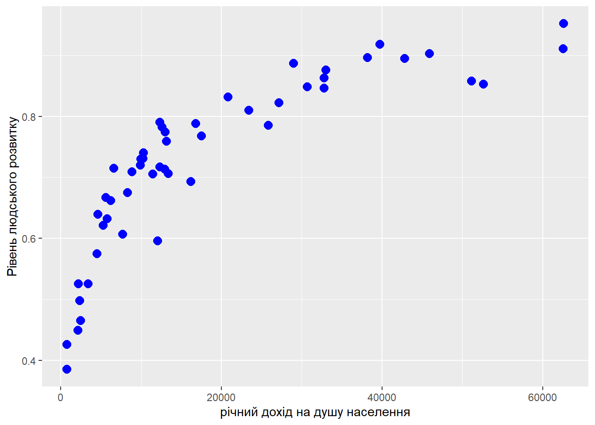
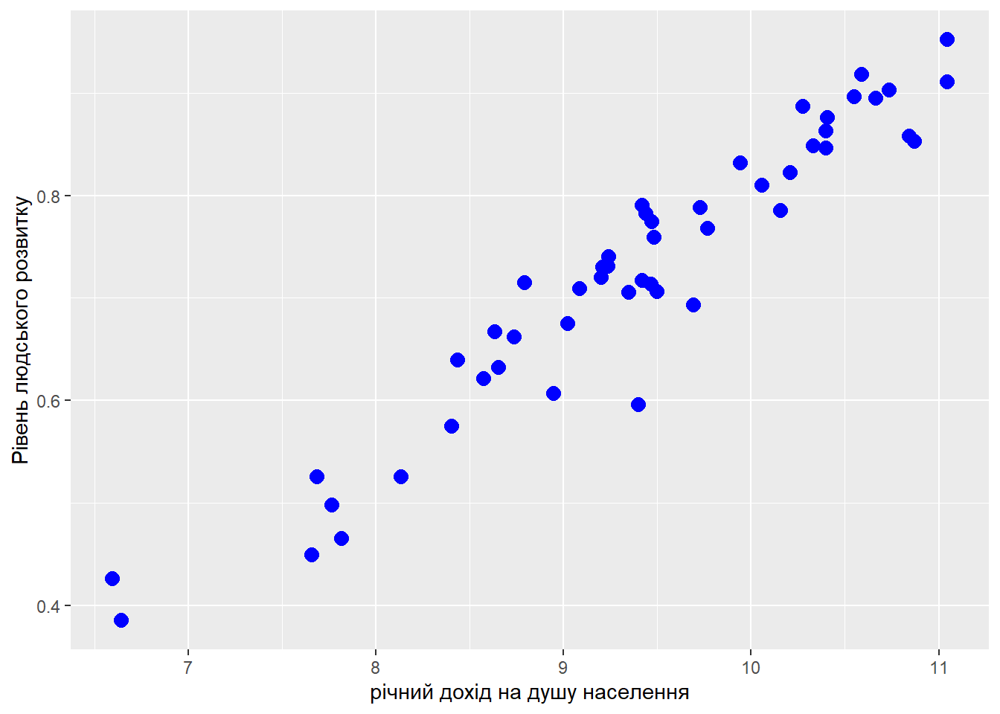
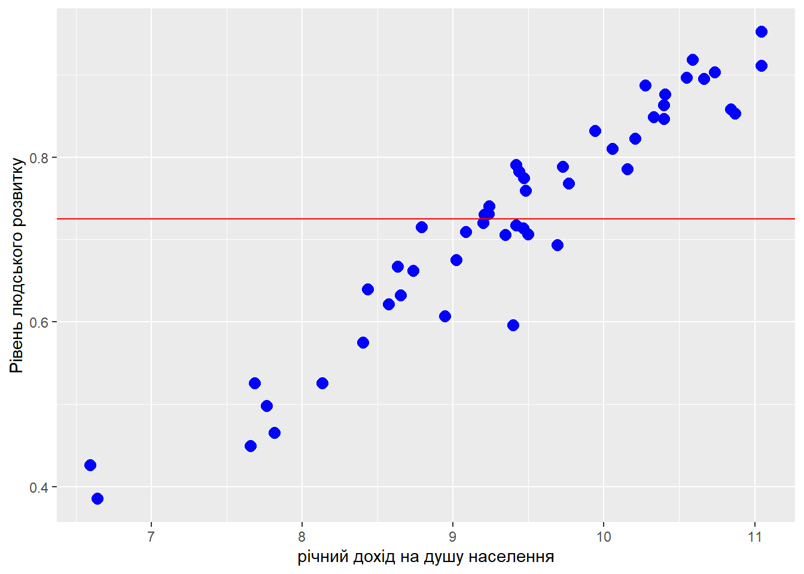

Курсова робота по економетриці на тему: Дослідження впливу різних факторів на рівень людського розвитку в різних країнах
Мета: дослідит вплив різних факторів на рівень людського розвитку, використовуючи мову програмування R та датасет Human Development Index Dataset, знайти та побудувати модель МЛР за методом МНК, що буде найкращою з точки зору прогнозування та інтерпритації, перевірити на гетероскедастичність та прибрати чи зменшити її вплив на точність моделі. Перевірити результат та зробити висновки
Автор
Oleksandr Neschasnij
Дата публікації
May 1, 2023
План
Побудова ПЛР за МНК;
Пошук найкращої МЛР;
Перевірка МЛР на нульову гіпотезу та наявність статистично значущого взаємозв’язку між змінними;
Перевірка моделі на явність явища гетероскедастичності
Використання моделі для виведення результатів за допомогою симплекс-методу
Пояснення змінних у датасеті
read_file
# A tibble: 191 × 8
Country Human Development In…¹ Life expectancy at b…² Expected years of sc…³
<chr> <dbl> <dbl> <dbl>
1 Switzer… 0.962 84.0 16.5
2 Norway 0.961 83.2 18.2
3 Iceland 0.959 82.7 19.2
4 Hong Ko… 0.952 85.5 17.3
5 Austral… 0.951 84.5 21.1
6 Denmark 0.948 81.4 18.7
7 Sweden 0.947 83.0 19.4
8 Ireland 0.945 82.0 18.9
9 Germany 0.942 80.6 17.0
10 Netherl… 0.941 81.7 18.7
# ℹ 181 more rows
# ℹ abbreviated names: ¹`Human Development Index (HDI)`,
# ²`Life expectancy at birth`, ³`Expected years of schooling`
# ℹ 4 more variables: `Mean years of schooling` <dbl>,
# `Gross national income (GNI) per capita` <dbl>,
# `GNI per capita rank minus HDI rank` <dbl>, `HDI rank` <dbl>
Показник
Коротке пояснення
Human Development Index
Комплексний індекс, який відображає рівень людського розвитку країни за такими показниками, як очікувана тривалість життя, рівень освіти та дохід на душу населення.
Life expectancy at birth
Середня тривалість життя при народженні.
Expected years of schooling
Середня очікувана тривалість навчання в країні на момент народження.
Mean years of schooling
Середня кількість років навчання, отримана усіма людьми, які стали дорослими у країні.
Gross national income (GNI) per capita
Річний дохід на душу населення.
GNI per capita rank minus HDI rank
Індекс, який відображає рівень розриву між доходами населення та їх рівнем людського розвитку у порівнянні з іншими країнами.
HDI rank
Позиція країни у рейтингу HDI.
Побудова ПЛР за МНК
У цьому розділі я розповім як створюється ПЛР/МЛР за методом найменших квадратів, які формули використовуються для розрахунку, та як мова програмування R полегшує роботу, проводячи всі розрахунки однією нескладною функцією.
Проста лінійна регресія — це модель, яка пояснює залежність між двома змінними за допомогою лінійного взаємозв’язку.
Підготовка вибірки
Для початку потрібно визначити залежну та незалежну змінні, оскільки залежна змінна— пояснювана або прогнозована змінна, то можемо легко сказати, що HDI(Human Development Index)— залежна, а всі інші— незалежні, але для ПЛР візьмемо одну, GNI per capita.
Тепер потрібно сформувати підвибірку з рівня людського розвитку та річного доходу на душу населення за допомогою функції slice_sample(n = …), яка потрібна для отримання зрізу даних випадкової вибірки. Функція select(lх, у) використовується дли вибору певних даних з стовпців датафрейму
set.seed(2023)SLR <- read_file %>%select(`Human Development Index (HDI)`, `Gross national income (GNI) per capita`) %>%slice_sample(n =50)SLR
# A tibble: 50 × 2
`Human Development Index (HDI)` `Gross national income (GNI) per capita`
<dbl> <dbl>
1 0.693 16198.
2 0.498 2361.
3 0.717 12349.
4 0.911 62574.
5 0.853 52654.
6 0.731 10258.
7 0.896 38188.
8 0.832 20839.
9 0.675 8296.
10 0.632 5745.
# ℹ 40 more rows
Візуалізація лінійної залежності між двома змінними
SLR %>%ggplot(aes(`Gross national income (GNI) per capita`,`Human Development Index (HDI)`)) +geom_point(shape =20, colour ="blue", size=5) +labs(x ="річний дохід на душу населення",y ="Рівень людського розвитку")

Перед тим як почати аналіз підкорегуємо графік за допомогою log-специфікації
SLR %>%ggplot(aes(log(`Gross national income (GNI) per capita`),`Human Development Index (HDI)`)) +geom_point(shape =20, colour ="blue", size=5) +labs(x ="річний дохід на душу населення",y ="Рівень людського розвитку")

Проглянувши діаграму, робимо висновок, що майже у всіх випадках, високий річний дохід свідчить про більший рівень людського розвитку
Проводемо пряму, яка відповідає середньому значенню HDI
SLR %>%ggplot(aes(log(`Gross national income (GNI) per capita`),`Human Development Index (HDI)`)) +geom_point(shape =20, colour ="blue", size=5) +geom_hline(aes(yintercept =mean(`Human Development Index (HDI)`)), color ="red") +labs(x ="річний дохід на душу населення",y ="Рівень людського розвитку")

Спостерігаємо відхилення модельних значень від фактичних
Метод найменших квадратів по кроково
Рівняння прямої виглядає наступним чином:
\[
y_i= \beta_0 + \beta_1x_i + u_i
\]
Підставимо конкретні змінні у рівняння, отримаємо:
\[
HDI_i = \beta_0 + \beta_1GNI_i + u_i
\]
Це рівняння називаються простою лінійною регресією або парною лінійною регресією.
Розглянемо складові рівняння:
\(y\): залежна змінна.
\(\beta_0\): вільний параметр моделі, який відповідає за точку перетину прямої з вістю ординат.
\(\beta_1\): залежний параметр моделі, який відповідає за кут нахилу прямої.
\(x\): незалежна змінна.
\(u\): залишки моделі.
Справа в тому, що в нашому розпорядженні є тільки певна вибірка даних і провести ідеальну пряму через всі точки неможливо. Тому нам необхідно розрахувати оцінки параметрів моделі, які будуть задовільняти нас.
Отже рівняння моделі набуває вигляду: \[
\hat{y_i} = \hat{\beta_0} + \hat{\beta_1}x_i
\] або для нашого прикладу \[
\hat{HDI_i} = \hat{\beta_0} + \hat{\beta_1}GNI_i
\] Для оцінювання параметрів моделі в лінійній регресії пропонується використовувати метод найменших квадратів. Подивимось, як працює мінімізація суми квадратів залишків. \[
\sum\limits^{n}_{i=1}{u_i^2} = \sum\limits^{n}_{i=1}(y_i - \hat{\beta_0} - \hat{\beta_1}x_i)^2 \rightarrow min
\] Візьмемо похідні по \(\hat{\beta_0}\) та \(\hat{\beta_1}\): \[
\left\{\begin{matrix}
-2\sum\limits^{n}_{i=1}(y_i - \hat{\beta_0} - \hat{\beta_1}x_i) = 0 & \\
-2\sum\limits^{n}_{i=1}x_i(y_i - \hat{\beta_0} - \hat{\beta_1}x_i) = 0 &
\end{matrix}\right.
\]
Поділимо перше рівняння на \(n\): \[
\left\{\begin{matrix}
\overline{y} - \hat{\beta_0} - \hat{\beta_1}\overline{x} = 0 & \\
\sum\limits^{n}_{i=1}x_i(y_i - \hat{\beta_0} - \hat{\beta_1}x_i) = 0 &
\end{matrix}\right.
\] З першого рівняння виразимо \(\hat{\beta_0}\) і підставимо у друге: \[
\left\{\begin{matrix}
\hat{\beta_0} = \overline{y} - \hat{\beta_1}\overline{x} & \\
\sum\limits^{n}_{i=1}x_i(y_i - (\overline{y} - \hat{\beta_1}\overline{x}) - \hat{\beta_1}x_i) = 0 &
\end{matrix}\right.
\] Розкриємо дужки у другому рівнянні: \[
\left\{\begin{matrix}
\hat{\beta_0} = \overline{y} - \hat{\beta_1}\overline{x} & \\
\sum\limits^{n}_{i=1}x_i(y_i - \overline{y}) = \hat{\beta_1}\sum\limits^{n}_{i=1}x_i(x_i - \overline{x})
\end{matrix}\right.
\] Оскільки \[\sum\limits^{n}_{i=1}x_i(y_i - \overline{y}) = \sum\limits^{n}_{i=1}(x_i - \overline{x})^2\] та \[\sum\limits^{n}_{i=1}x_i(y_i - \overline{y}) = \sum\limits^{n}_{i=1}(x_i - \overline{x})(y_i - \overline{y}),\] тоді за умови \[
\sum\limits^{n}_{i=1}(x_i - \overline{x})^2 > 0
\] оцінки параметрів моделі \(\hat{\beta_0}\) та \(\hat{\beta_1}\) будуть дорівнювати:
\[
\left\{\begin{matrix}
\hat{\beta_0} = \overline{y} - \hat{\beta_1}\overline{x} & \\
\hat{\beta_1} = \frac{\sum\limits^{n}_{i=1}(x_i - \overline{x})(y_i - \overline{y})}{\sum\limits^{n}_{i=1}(x_i - \overline{x})^2} = \frac{\overline{xy} - \overline{x}\overline{y}}{\overline{x^2} - \overline{x}^2}
\end{matrix}\right.
\] Проте мова програмування R надає нам чудову функцію lm(), яка дозваляє уникнути створення моделі за МНК по кроково, а функція summary() виводить додаткову інформаю про модель, у тому числі оцінку коефіцієнтів
SLR_model <-lm(`Human Development Index (HDI)`~`Gross national income (GNI) per capita`, data = SLR)summary(SLR_model)
Call:
lm(formula = `Human Development Index (HDI)` ~ `Gross national income (GNI) per capita`,
data = SLR)
Residuals:
Min 1Q Median 3Q Max
-0.21447 -0.04809 0.02621 0.05275 0.10967
Coefficients:
Estimate Std. Error t value Pr(>|t|)
(Intercept) 5.941e-01 1.726e-02 34.42 <2e-16
`Gross national income (GNI) per capita` 7.008e-06 6.957e-07 10.07 2e-13
(Intercept) ***
`Gross national income (GNI) per capita` ***
---
Signif. codes: 0 '***' 0.001 '**' 0.01 '*' 0.05 '.' 0.1 ' ' 1
Residual standard error: 0.08041 on 48 degrees of freedom
Multiple R-squared: 0.6788, Adjusted R-squared: 0.6721
F-statistic: 101.5 on 1 and 48 DF, p-value: 1.999e-13